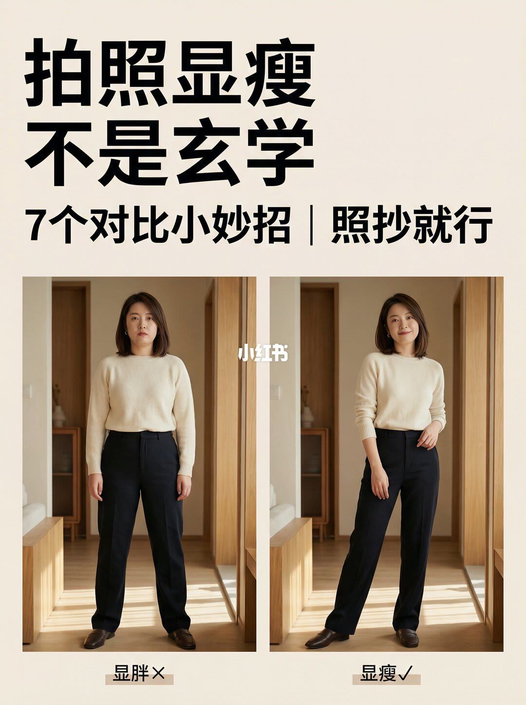
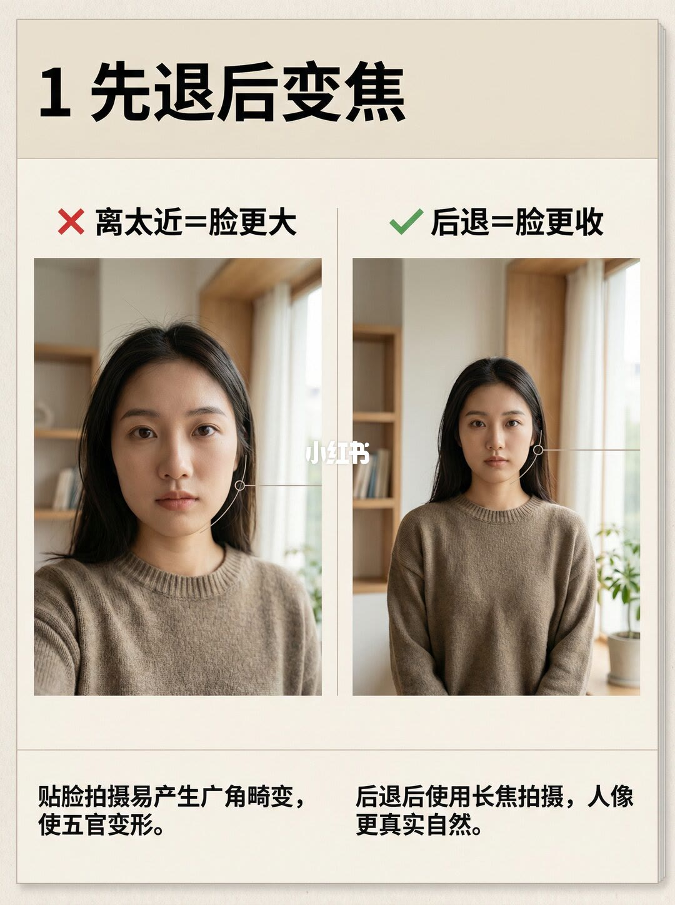
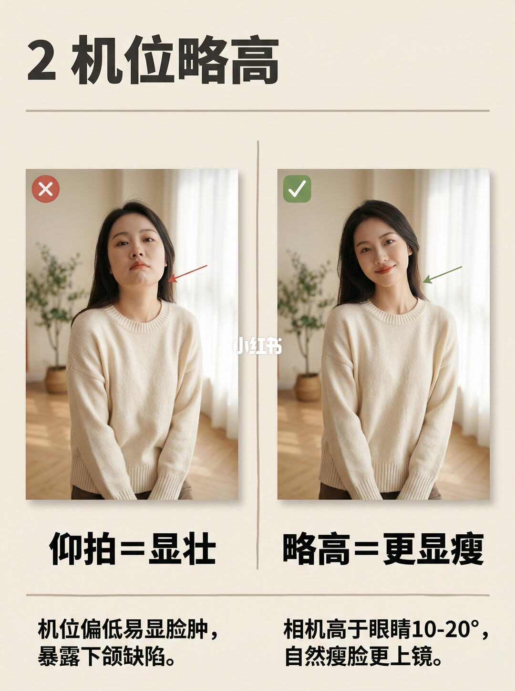
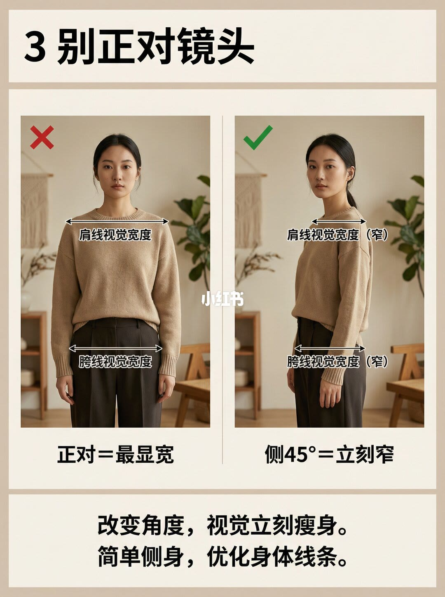
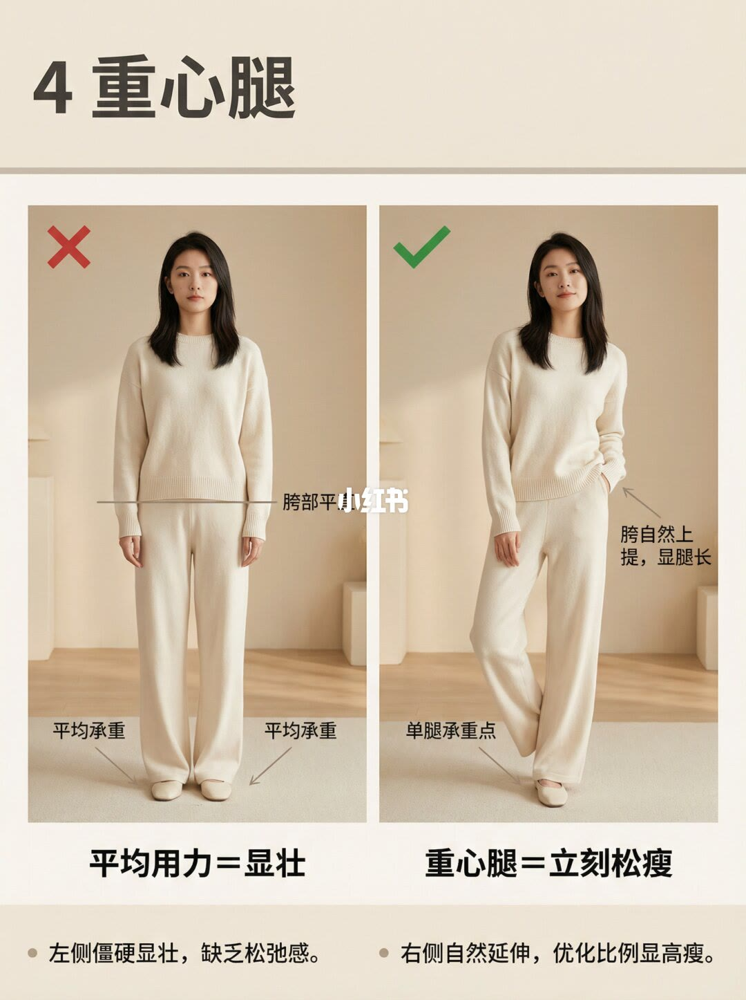
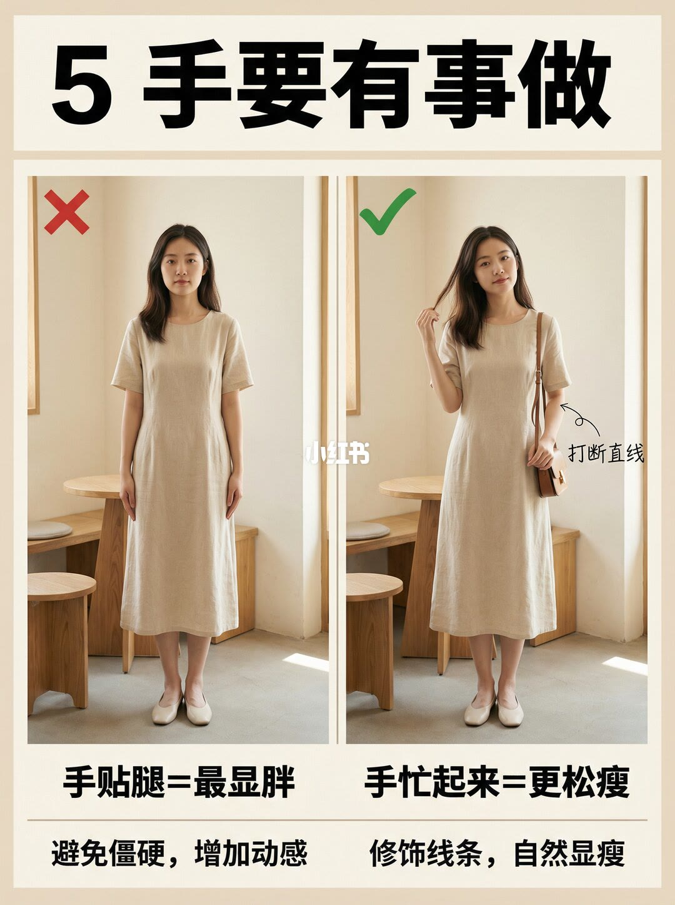
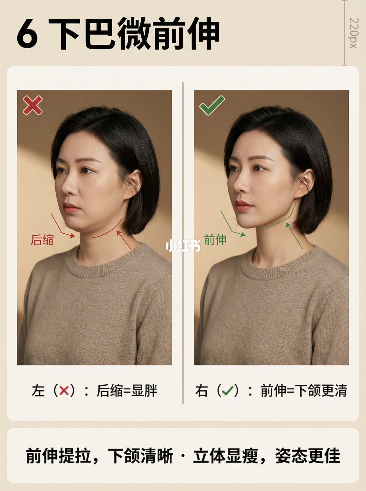
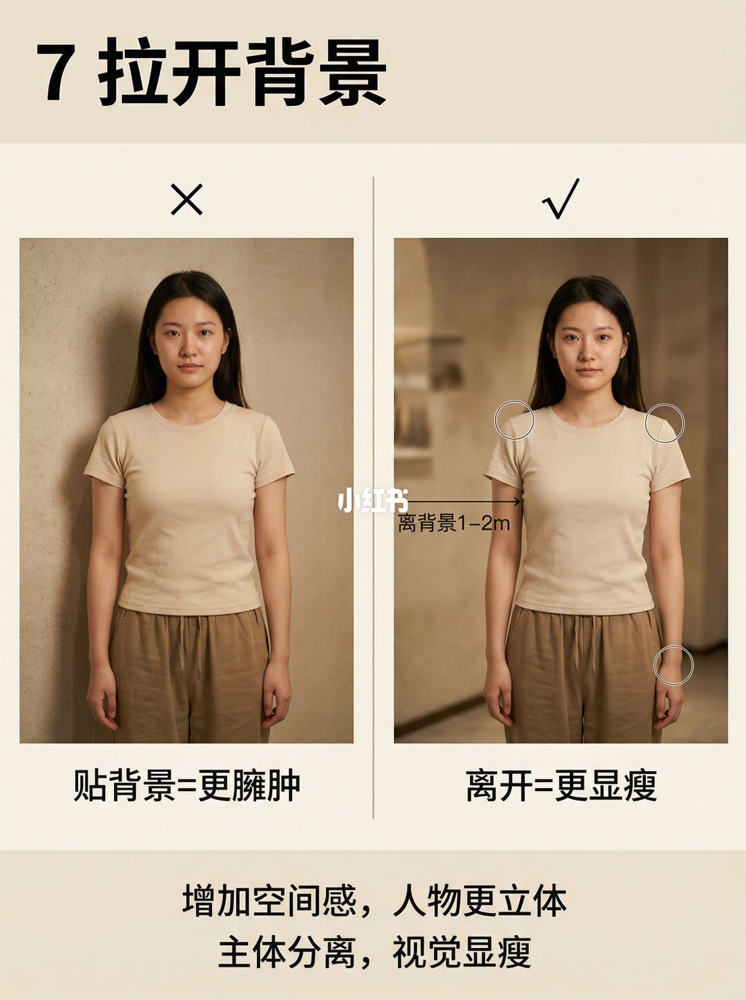
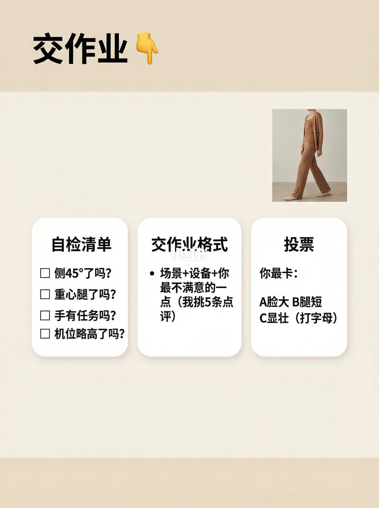

图文实录 · 小红书 · 爱拍照的七十(努力涨粉中)
拍照显瘦不是玄学！学会这七招立马变瘦
标题写的是七招。图上编号正好是 1 到 7，另加封面和最后的交作业，一共 9 页。七招都是左右对比：改距离、机位、侧身、重心、手、下巴和离背景，不改体重。
1/9
封面：显胖和显瘦并排
大标题是「拍照显瘦不是玄学」。下面一行是「7个对比小妙招｜照抄就行」。左边标「显胖×」：人正对镜头，双臂贴身，两脚分开。右边标「显瘦√」：身体侧过去，重心偏到一边，一只手略向前，袖子挽到小臂。两张都是米白上衣配深色裤子，室内过道。这一页没有编号，不是第八招。

2/9
1 先退后变焦
左边红叉「离太近=脸更大」，下面写「贴脸拍摄易产生广角畸变，使五官变形。」右边绿勾「后退=脸更收」，下面写「后退后使用长焦拍摄，人像更真实自然。」两张都是棕色毛衣的近景，有线指着下颌。焦段数字图上没有。

3/9
2 机位略高
左边「仰拍=显壮」，说明是「机位偏低易显脸肿，暴露下颌缺陷。」红色箭头指着下颌和脖子交界。右边「略高=更显瘦」，说明是「相机高于眼睛10-20°，自然瘦脸更上镜。」绿色箭头指着侧脸下颌线。对比的是仰拍和略高，不是大幅俯拍。

4/9
3 别正对镜头
左边正对，两条双箭头分别标「肩线视觉宽度」和「胯线视觉宽度」，结论「正对=最显宽」。右边身体转到大约 45 度、脸还看镜头，同样两处标成「窄」，结论「侧45°=立刻窄」。页底两句：「改变角度，视觉立刻瘦身。」「简单侧身，优化身体线条。」

5/9
4 重心腿
左边双脚平均承重，胯部标着「胯部平」，标题「平均用力=显壮」，旁注「左侧僵硬显壮，缺乏松弛感。」右边把重量放到一条腿上，标「单腿承重点」和「胯自然上提，显腿长」，标题「重心腿=立刻松瘦」，旁注「右侧自然延伸，优化比例显高瘦。」衣服是米白上衣配阔腿裤。哪一条腿在前，图上没有写成口令。

6/9
5 手要有事做
左边双手贴着大腿，标题「手贴腿=最显胖」，下面写「避免僵硬，增加动感」。右边一手拢头发，另一手扶着包带，箭头标「打断直线」，标题「手忙起来=更松瘦」，下面写「修饰线条，自然显瘦」。浅色长衣，室内。包是这一页才出现的道具。

7/9
6 下巴微前伸
两张半身。左边红叉，箭头往后，标「后缩」，说明「左（❌）：后缩=显胖」。右边绿勾，箭头向前，标「前伸」，说明「右（✔️）：前伸=下颌更清」。底栏是「前伸提拉，下颌清晰 · 立体显瘦，姿态更佳」。前伸多少厘米，图上没有。

8/9
7 拉开背景
左边人贴着墙，影子落在墙上，标题「贴背景=更臃肿」。右边人离开墙，背景虚掉，箭头写「离背景1-2m」，肩和手臂外侧有圈，标题「离开=更显瘦」。页底两句：「增加空间感，人物更立体」「主体分离，视觉显瘦」。浅色短袖和卡其裤。

9/9
交作业
标题「交作业」，旁边有一张侧身小图。三张卡片。自检清单四条：侧45°了吗、重心腿了吗、手有任务吗、机位略高了吗。中间是交作业格式：「场景+设备+你最不满意的一点（我挑5条点评）」。右边投票：「你最卡」A脸大、B腿短、C显壮，让人打字母。清单没有写后退变焦、下巴前伸和离背景。

汇总
七招是拍法，九页才是整篇
结论：显瘦在这套图里是画面投影变窄，靠后退变焦、机位略高、侧 45°、单腿承重、手离开大腿、下巴前伸、人离背景。支撑页是第 2 页到第 8 页，对应编号 1 到 7；第 1 页是总对比，第 9 页只抽了其中四条做自检。边界：文案说同一人物、同一服装、同一机位，图上人看起来是同一人，衣服和房间在各招之间换过，不能当成控制变量的实验。10–20° 和 1–2 米是图上写的，没有给出测量方法；长焦没有焦段。这不是体重变化，也不是所有脸型的规则。